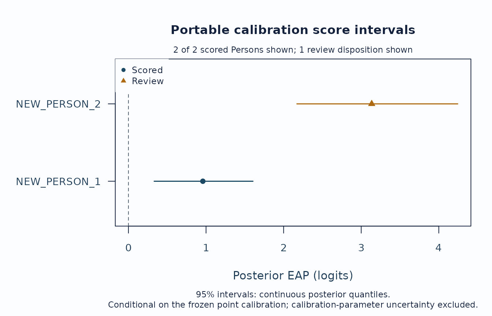

Portable calibration and fresh-session scoring
Source:vignettes/mfrmr-portable-calibration.Rmd
mfrmr-portable-calibration.RmdThis workflow creates a portable calibration from an eligible fitted model, validates and freezes it, saves it, and then scores new Persons without the source fit or training responses. The scoring phase uses only the saved artifact and the new response rows.
The portable workflow is deliberately narrower than fitted-object
scoring. It supports one observed score scale and one latent dimension
for RSM or PCM fitted by MML
under the fixed standard-normal scoring basis. It does not currently
create portable artifacts for estimated-population or latent- regression
fits, JML, or bounded GPCM.
Supported direct and group facet anchors and two-way facet interactions are retained in the calibration. New responses must use its recorded non-Person facet levels. Preserving an interaction for scoring does not establish its statistical significance or the model’s suitability for another population.
library(mfrmr)
mfrm_calibration_capabilities()[, c(
"Model", "Estimator", "ScoringBasis", "PortableCalibration"
)]
#> Model Estimator ScoringBasis
#> 1 RSM MML fixed standard normal
#> 2 PCM MML fixed standard normal
#> 3 RSM/PCM MML estimated population or latent regression
#> 4 bounded GPCM MML fixed or estimated population
#> 5 RSM/PCM JML post-hoc scoring prior
#> 6 bounded GPCM JML post-hoc scoring prior
#> PortableCalibration
#> 1 available
#> 2 available
#> 3 unavailable
#> 4 unavailable
#> 5 unavailable
#> 6 unavailableCalibration session
The bundled example_core data are synthetic. This
example uses 18 Persons to keep vignette runtime modest; a substantive
analysis should use its planned sample and design rather than copying
that count.
synthetic <- load_mfrmr_data("example_core")
person_ids <- unique(as.character(synthetic$Person))
training_ids <- person_ids[seq_len(18L)]
training <- synthetic[
as.character(synthetic$Person) %in% training_ids,
,
drop = FALSE
]
fit <- suppressWarnings(fit_mfrm(
training,
person = "Person",
facets = c("Rater", "Criterion"),
score = "Score",
model = "RSM",
method = "MML",
quad_points = 5,
maxit = 20
))
quadrature_review <- suppressWarnings(mml_quadrature_sensitivity(
fit,
training,
quad_points = c(5, 7),
theta_points = 41
))
summary(quadrature_review)
#> RSM-MML quadrature sensitivity summary
#> ReferenceNodes ComparedGrids AllEstimationConverged AllHessiansFullRank
#> 5 2 TRUE TRUE
#> MaxNLLAbsChangePerPerson MaxMeasurementParameterAbsChange MaxSlopeAbsChange
#> 0.09056 0.06055 NA
#> MaxPopulationSDAbsChange MaxProbabilityAbsChange MaxEAPAbsChange
#> 0 0.01598 0.47415
#> MaxPosteriorSDAbsChange
#> 0.29125
#>
#> Grid comparisons
#> Model ReferenceNodes Nodes IsReference NLLChangePerPerson
#> RSM 5 5 TRUE 0.00000
#> RSM 5 7 FALSE -0.09056
#> NLLAbsChangePerPerson MeasurementParameterMaxAbsChange SlopeMaxAbsChange
#> 0.00000 0.00000 NA
#> 0.09056 0.06055 NA
#> RawSlopeSEMaxAbsChange PopulationSDAbsChange RawPopulationSDSEAbsChange
#> NA 0 NA
#> NA 0 NA
#> ProbabilityMaxAbsChange EAPMaxAbsChange PosteriorSDMaxAbsChange
#> 0.00000 0.00000 0.00000
#> 0.01598 0.47415 0.29125
#> No automatic stability classification or readiness change is applied.
fit <- quadrature_review$fits$q7
draft <- extract_mfrm_calibration(
fit,
calibration_id = "portable-rsm-example",
source_fit_id = "synthetic-rsm-fit",
scoring_quad_points = 31,
quadrature_review = quadrature_review
)
review_mfrm_calibration(draft)
#> [1] Code FieldPath Detail Severity
#> <0 rows> (or 0-length row.names)
validated <- validate_mfrm_calibration(draft)
frozen <- freeze_mfrm_calibration(validated)
frozen
#> <mfrm_calibration>
#> State: frozen
#> Model: RSM / MML
#> Scoring prior: standard normal (mean 0, SD 1)
#> Facets: 2; coordinates: 11; anchors: 0
#> Validation refusals: 0
artifact_file <- tempfile(fileext = ".rds")
save_mfrm_calibration(frozen, artifact_file)The fit-time quadrature and the scoring-time quadrature are distinct. The two small fit grids above keep this example quick; they are not recommendations for substantive work. Inspect the continuous movement on grids chosen for the application and extend them when needed. Public extraction accepts the exact highest-grid fit in that review but does not decide whether its movement is small enough. The artifact separately records the 31-point grid used for later posterior scoring, and the response-linked review should be archived outside the portable artifact when it is needed for an audit trail.
Fresh scoring session
In operational use, start a new R process and supply only the artifact path and new response rows. The following chunk removes the fit, draft, validation object, and training data before loading the artifact, so none can influence the score.
new_rows <- synthetic[
as.character(synthetic$Person) %in% person_ids[19:20],
c("Person", "Rater", "Criterion", "Score"),
drop = FALSE
]
new_ids <- stats::setNames(
c("NEW_PERSON_1", "NEW_PERSON_2"), person_ids[19:20]
)
new_rows$Person <- unname(new_ids[as.character(new_rows$Person)])
rownames(new_rows) <- NULL
# Create one explicit review case for the tutorial figure. In operational
# scoring, never alter observed responses to manufacture a disposition.
new_rows$Score[new_rows$Person == "NEW_PERSON_2"] <- max(training$Score)
rm(fit, quadrature_review, draft, validated, frozen, training, synthetic)
invisible(gc())
calibration <- load_mfrm_calibration(artifact_file)
scores <- score_mfrm_calibration(
calibration, new_rows, adaptive_quad_points = c(31, 61)
)
summary(scores)
#> mfrmr Portable Calibration Score Summary
#>
#> Fixed-parameter integration review (adaptive minus fixed)
#> FixedNodes AdaptiveNodes Persons Unavailable MaxAbsLogMarginalChange
#> 31 31 2 0 0.002445619
#> 31 61 2 0 0.002445619
#> MaxAbsEAPChange MaxAbsSDChange
#> 0.002926627 0.00356594
#> 0.002926627 0.00356594
#> Calibration: portable-rsm-example
#> Model / estimator: RSM / MML
#> Persons: 2 scored (1 requiring review); 0 not scored
#>
#> Posterior estimates (2 of 2)
#> NEW_PERSON_1: estimate 0.959, SD 0.328, interval [0.331, 1.605], scored
#> NEW_PERSON_2: estimate 3.135, SD 0.529, interval [2.171, 4.244], review
#> required
#>
#> Persons requiring review or not scored (1 of 1)
#> NEW_PERSON_2: review required; reasons: all responses at the maximum score
#>
#> Response-row disposition
#> 32 input; 32 scored; 0 omitted; 0 refused; missing-response policy: error
#>
#> Interval interpretation
#> 95% intervals: continuous posterior quantiles.
#> Posterior SDs and intervals are conditional on the frozen point calibration
#> and exclude calibration-parameter uncertainty.
plot(
scores,
type = "interval",
preset = "publication"
)
unlink(artifact_file)The base and optional ggplot2 renderers distinguish scored and review states by shape as well as colour. The complete score and review tables remain in the summary object even though its console printout shows only a compact preview.
The interval figure is the first score-batch review. Orange triangles
identify Persons whose Disposition is
scored_review; inspect their ReasonCodes
before using the estimate. A Person with no valid response has no score
coordinate and therefore appears in summary(scores)$review
and in the draw-free plot payload’s unplotted_dispositions,
not as an artificial point.
Two focused follow-up views use the same score object without consulting the source fit:
# Valid response rows versus posterior SD.
plot(scores, type = "precision", preset = "publication")
# Posterior mass on the outer quadrature nodes versus the recorded threshold.
edge_review <- plot(scores, type = "edge_mass", draw = FALSE)
edge_review$data$selection_summary
edge_review$data$unplotted_dispositionsThese displays review a returned score batch. They do not establish source-fit quality, reliability, calibration transport, or validity. Every interval and posterior SD remains conditional on the frozen point calibration and excludes calibration-parameter uncertainty.
A small edge mass does not guarantee accurate integration: a narrow
posterior can fall between nodes near the middle of the grid. The
optional adaptive_quad_points above adds a separate
numerical comparison, placing nodes around each scored Person’s
posterior mode and scaling their spacing to its local width. It holds
the calibration parameters and prior fixed.
summary(scores)$quadrature_overview
#> FixedNodes AdaptiveNodes Persons Unavailable MaxAbsLogMarginalChange
#> 1 31 31 2 0 0.002445619
#> 2 31 61 2 0 0.002445619
#> MaxAbsEAPChange MaxAbsSDChange
#> 1 0.002926627 0.00356594
#> 2 0.002926627 0.00356594
# Keep full precision when inspecting individual differences.
head(scores$quadrature_review[c(
"Person", "AdaptiveNodes", "EAPChange", "PosteriorSDChange",
"AdaptiveEAPChangeFromPrevious", "AdaptiveSDChangeFromPrevious", "Status"
)])
#> Person AdaptiveNodes EAPChange PosteriorSDChange
#> 1 NEW_PERSON_1 31 -2.926627e-03 -3.56594e-03
#> 2 NEW_PERSON_1 61 -2.926627e-03 -3.56594e-03
#> 3 NEW_PERSON_2 31 -1.563277e-05 1.99646e-05
#> 4 NEW_PERSON_2 61 -1.563277e-05 1.99646e-05
#> AdaptiveEAPChangeFromPrevious AdaptiveSDChangeFromPrevious Status
#> 1 NA NA computed
#> 2 4.440892e-16 5.551115e-17 computed
#> 3 NA NA computed
#> 4 7.549517e-15 1.004752e-13 computedCheck fixed-versus-adaptive differences and changes between adaptive
orders, including log-marginal likelihood contributions in the full
table. Observation weights, when supplied, enter the likelihood as in
the original scoring call. The first adaptive order has no previous
order, so its change columns are NA. A
computed status means the calculation finished; it does not
certify accuracy. An unavailable row retains the reason in
Detail. Persons with no scored responses remain in the
ordinary disposition review and have no numerical integration row.
Archive the full table with the score batch when reporting numerical
checks. The comparison does not replace returned scores, intervals, or
the artifact’s stored grid, and it does not change readiness. Use the
same option in predict_mfrm_units() or
mml_quadrature_sensitivity() to review a fitted object; the
latter also retains its separate comparison of refitted models.
To use adapted grids during fitting and subsequent scoring, set
mml_integration = "adaptive" in the fit_mfrm()
call above. The direct MML engine then updates the grids while
estimating parameters. The refit review retains this mode, and the
frozen artifact records
scoring_algorithm = "adaptive_quadrature_eap_v2". Its
stored nodes and weights define the base Hermite rule; scoring places
that rule around each new Person’s posterior. A small edge mass on an
adapted grid is still not an accuracy certificate. Keep the order
comparison and report the integration mode. Ordinary fitting defaults to
mml_integration = "fixed", and existing fixed-grid
artifacts retain their scoring algorithm.
New v2 scoring uses continuous equal-tail posterior intervals: a 95% interval leaves 2.5% of the continuous posterior below each lower endpoint and above each upper endpoint. EAP and SD still use the stored quadrature rule. Older v1 artifacts retain their discrete grid endpoints for reproducibility and carry a note that their continuous posterior mass may differ from the requested level. A frozen point calibration’s intervals exclude calibration-parameter uncertainty; they do not guarantee 95% coverage at every fixed true ability.
Printed results and interval plots state the requested level and
identify saved grid-based intervals. Both scores$estimates
and summary(scores)$estimates retain
ScoringAlgorithm and IntervalLevel for CSV
export, alongside the calibration and uncertainty basis.
IntervalLevel is the requested posterior probability, not
measured frequentist coverage, and is not rounded by
summary(). For older saved score results, re-running
summary() recovers these fields from the result’s stored
settings without recomputing scores.
The scoring prior is also an assumption about the target population. For example, a new population with a wider ability distribution than the recorded standard normal prior can have less than 95% of its true abilities inside these intervals, even when the numerical integration is accurate. Increasing the quadrature order checks approximation under the same prior; it does not establish that this prior fits the new population. Report the scoring prior and explain its relevance to the population receiving scores, alongside the calibration and integration settings.
An intercept-only normal population fitted to training data can
adjust the scoring mean and variance, but it does not learn a skewed
population shape. Its score intervals still condition on the estimated
calibration and population parameters and exclude uncertainty from
estimating them. Training and scoring populations also need not match.
Such fitted-object scoring currently requires
readiness_policy = "review" in
predict_mfrm_units() and cannot be exported as a portable
calibration; see the latent-regression workflow in
?fit_mfrm.
For example, a calibration may come from last year’s cohort while this year’s cohort has a different ability distribution. With an intercept-only population model, scoring the new response batch retains the fitted mean and variance; it does not estimate a new batch population. Source readiness alone therefore does not establish that the prior represents this year’s people. Identify the training and scoring cohorts in the report, explain why the scoring prior can be applied to the new cohort, and examine sensitivity when that assumption is uncertain. A larger training sample can estimate last year’s population more precisely without resolving a difference between the two populations.
For a separate scoring script, the essential code is:
library(mfrmr)
calibration <- load_mfrm_calibration("reviewed-calibration.rds")
new_rows <- read.csv(
"new-responses.csv",
colClasses = "character",
na.strings = "",
check.names = FALSE,
fileEncoding = "UTF-8-BOM"
)
scores <- score_mfrm_calibration(calibration, new_rows)
print(scores)
plot(scores, type = "interval", preset = "publication")
write.csv(scores$estimates, "person-scores.csv", row.names = FALSE)Read identifiers as text: 001 and 1 can
identify different Persons, and NA can be a literal
identifier. The example treats empty cells as missing; if your response
file uses another missing-score token, convert it only in the score
column before scoring. Do not let automatic CSV type conversion merge
people or change the frozen facet labels. Numeric score strings are
validated against the frozen score map by the scorer.
Keep scores with saveRDS() when the full
review and numerical settings are needed. The CSV above preserves
per-score identities and uncertainty labels, but does not contain the
complete row review or optional integration review. When reading that
CSV back, also preserve identifier columns as text.
Unknown facet levels, unknown score values, invalid weights,
ambiguous duplicates, and malformed artifacts fail closed. Missing
responses require an explicit missing_response = "omit"
policy.
If scoring stops or asks for review
An input error stops the scoring call. A returned
scored_review result has an estimate that needs review;
not_scored means no estimate is available. Inspect
summary(scores)$review, including Persons absent from the
interval plot. The printed review translates the reason codes into
descriptions.
| What you see | What to check or change |
|---|---|
| An unseen rater, task, or other facet level | Check spelling and preserve IDs as text. A genuinely new level has no parameter in this calibration: return to calibration with an appropriate linking design. Do not rename it as an existing level or edit the frozen artifact. |
| A score outside the frozen map | Check the original rubric and missing-score codes. Correct an entry error or explicitly recode a documented missing marker. A changed rubric requires calibration review; widening a score range cannot update the saved map. |
| Missing scores or IDs | Correct unintended missing values. Explicit omission applies to missing scores, not missing Person or facet IDs, and does not correct selective nonresponse. Review omitted counts after rescoring. |
| Duplicate response cells | Check whether rows are accidental copies or distinct rating events.
Correct copies; use the documented event_id argument only
for genuine distinct events under the intended model. New event IDs do
not model dependence between repeated performances. |
| A missing, nonfinite, or nonpositive weight on a scored row | Check the weight column and its intended meaning. Correct erroneous values; do not replace them with arbitrary constants just to obtain scores. |
| A malformed or incompatible artifact | Restore the original file and use a compatible package version. If it must be recreated, return to the source fit and the documented extraction/review workflow. Do not edit schema or validation fields to bypass the refusal. |
| Review because responses are very few, omitted, or all at one endpoint | Check the original ratings and valid/omitted counts. Interpret precision and dependence on the prior before using the estimate; further ratings may be needed. These flags do not by themselves diagnose an invalid Person or justify changing responses. |
| Review because posterior mass is near integration limits | Examine the numerical comparisons described above. Increasing optimizer iterations cannot alter a frozen calibration. If scoring settings need revision, return to the calibration workflow and retain a new artifact and its review. |
No valid responses (not_scored) |
Correct missing-score coding if erroneous, or obtain valid ratings. Retain the unavailable result; do not substitute a zero-logit score. |
A completed numerical comparison does not automatically clear these review states. Record the reason, the action taken, and the calibration used with the score batch.
Every returned estimate is a posterior EAP conditional on the recorded fixed point calibration and prior; its uncertainty interval excludes calibration-parameter uncertainty. Validate the intended score use, population transport, and decision consequences outside this numerical workflow.